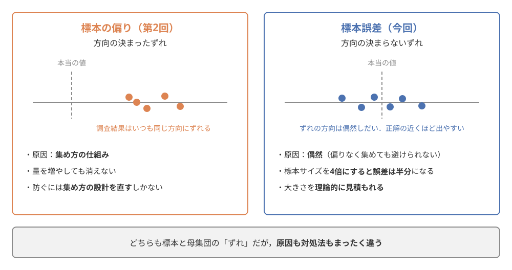
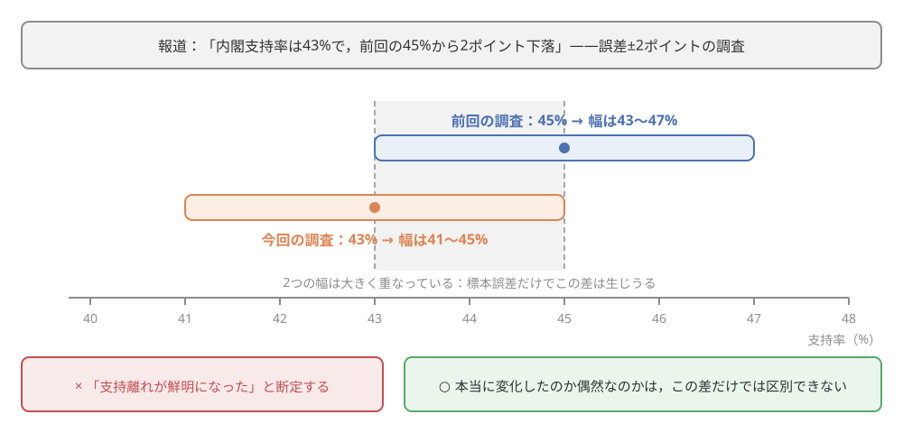
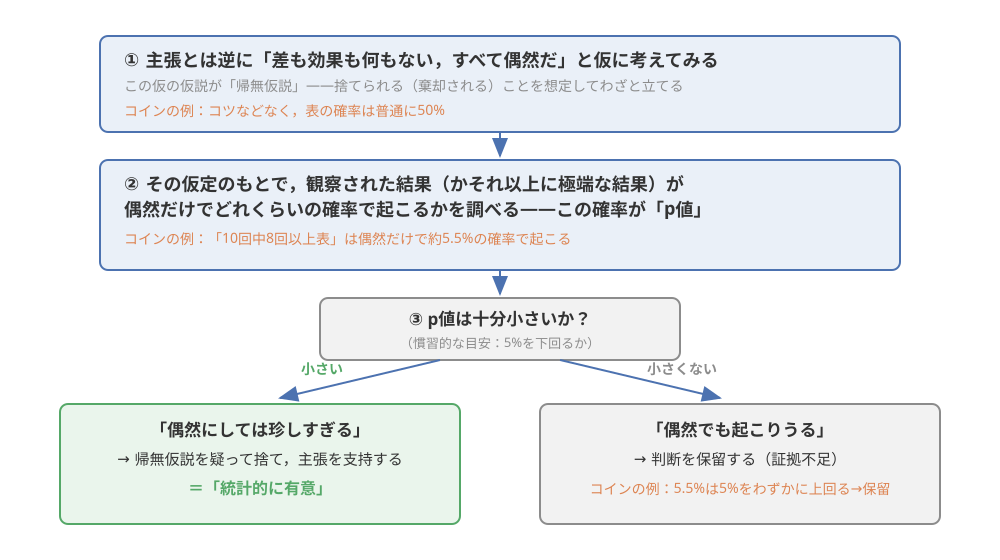

第6回：データの分析II——一部から全体を知る：推測統計の入口#
この回で学ぶこと#
この回の学習目標は，次の5点です．
なぜ約2,000人への調査で「日本全体」の傾向が分かるのかを，推測統計の考え方で説明できる
偏りなく集めた標本にも避けられない標本誤差があること，そして標本サイズを大きくすると誤差は縮むが「4倍にしても半分にしかならない」という限界があることを，シミュレーションで体感する
世論調査報道の「支持率◯%（誤差±◯ポイント）」という表現（信頼区間）を正しく読める
「その差は偶然でも起こりうるか」を確かめる仮説検定の発想と，p値の意味を直感的に説明できる
「統計的に有意＝重要」ではないなどp値の誤用のパターンと再現性の問題を知り，調査や研究のニュースを鵜呑みにしない読み方を身につける
この章にも，第5回と同じくPythonのコードとその実行結果が多く登場します．コードを書けるようになる必要はありません．「同じ調査を何度も繰り返したら，結果はどれくらい揺れるのか」——ふだんは絶対に見ることのできない光景を，シミュレーションで目撃することがこの章の目玉です．
本題に入る前に，図 29 で本科目における現在地を確認しておきましょう．今回はデータのライフサイクルのうち，分析の2回めにあたります．

図 29 本科目における現在地——分析の2回め「分析II：推測統計」（第6回）#
導入：たった2,000人に聞いて，なぜ「日本全体」が分かるのか#
事例：毎月のニュースでおなじみの「内閣支持率」
テレビや新聞は，毎月のように世論調査の結果を報じています．「内閣支持率は44%で，前回の調査から3ポイント下がりました」——こうしたニュースを，みなさんも一度は目にしたことがあるでしょう．
ここで，報道の末尾に小さく添えられている調査の概要に注目してください．そこには，たとえばこう書かれています．「全国の有権者から無作為に選んだ約2,000人を対象に調査を実施した」．
日本の有権者はおよそ1億人です．2,000人というのは，そのうちの5万人に1人，割合にして0.002%にすぎません．みなさんの大学の学生全員どころか，1つの学部の人数にも届かない人数です．そんなわずかな人数への調査結果が，「日本全体の世論」として毎月堂々と報じられ，政治を動かす材料にまでなっているのです．
たった2,000人に聞いただけで，本当に1億人のことが分かるのでしょうか？ 分かるとしたら，どれくらい正確に分かるのでしょうか？
この「どれくらい正確に分かるのか」という問いに答えるのが，今回のテーマである推測統計です．実は第2回「データの収集」で，この問いの前半にはすでに答えています．よくかき混ぜた味噌汁は一口で味が分かる——つまり，偏りなく選ばれた標本は母集団の縮図になる，という話でした．今回はその続きとして，「一口でどこまで正確に分かるのか」「その差は偶然の範囲ではないのか」という精度と偶然の問題に踏み込みます．そしてこの章の終わりには，世論調査だけでなく，「新しい勉強法で成績が上がった」「この食品で健康になった」といった，世の中にあふれる「差があった」という主張を見きわめる道具も手に入ります．
標本から全体を推し量る——推測統計の考え方#
第2回の復習：味噌汁の味見と標本調査#
まず，第2回で学んだ言葉を思い出しましょう．本当に知りたい対象の全体が母集団（今回の例では有権者約1億人），実際に調べるために取り出した一部が標本（調査に答えた約2,000人）でした．そして，鍋いっぱいの味噌汁（母集団）の味は，よくかき混ぜてから一口（標本）味見すれば分かる——この「かき混ぜる」にあたるのが，くじ引きのように標本を選ぶ無作為抽出でした．
このように，手元の標本から，その背後にある母集団の性質を推し量る統計学の分野を推測統計（inferential statistics）と呼びます．第5回の最後に，「記述統計＝手元のデータを要約して記述する」「推測統計＝手元のデータから全体を推し量る」という役割の違いを紹介しました．今回はいよいよ推測統計の中身に入っていきます．
第2回の中心事例だったLiterary Digest誌の失敗も思い出してください．約240万人分という空前の回答を集めながら，偏った名簿と回答者の自己選択という二重の選択バイアスのせいで，1936年の大統領選挙の予測を正反対に外した事例でした [Squire, 1988]．偏った集め方は量では救えない——これが第2回の教訓です．一方，同じ選挙で，ギャラップははるかに少人数の，しかし偏りを抑えた調査で当選者を言い当てました．「2,000人で1億人が分かる」という現代の世論調査は，この教訓の上に成り立っています．
「偏りなく」の次の問い：「どれくらい正確か」#
ただし，第2回の話には続きがあります．かき混ぜ方が完璧なら，一口の味見はいつでも鍋全体の味とぴったり同じなのでしょうか．
そんなことはありませんね．どんなによくかき混ぜても，すくった一口には，たまたま具が多めに入るかもしれないし，たまたま味噌が濃いめの部分をすくってしまうかもしれません．つまり，偏りのない選び方をしても，「たまたま」による小さなずれは避けられないのです．
調査でも同じことが起こります．有権者1億人から完璧にくじ引きで2,000人を選んでも，選ばれた2,000人の中の支持率が，1億人全体の支持率とぴったり一致するとは限りません．たまたま支持者が少し多めに選ばれることも，少なめに選ばれることもあります．この，偏りのない標本にも偶然によって生じる，標本の値と母集団の本当の値とのずれを，標本誤差（sampling error）と呼びます．
ここで，第2回で学んだ「標本の偏り」と今回の「標本誤差」の違いを整理しておきましょう．どちらも「標本と母集団のずれ」ですが，性質がまったく違います．
標本の偏り（第2回）：集め方の仕組みが原因で生じる，方向の決まったずれ．量を増やしても消えない．防ぐには集め方の設計を直すしかない
標本誤差（今回）：偶然が原因で生じる，方向の決まらないずれ．標本サイズを大きくすれば小さくできる．そして——ここが重要なのですが——どれくらいの大きさになるかを理論的に見積もることができる
この2種類の「ずれ」の対比を 図 30 にまとめました．左の偏りでは，調査結果がいつも本当の値の同じ側にずれるのに対し，右の誤差では，ずれの方向は偶然しだいで，正解の近くほど出やすくなります．

図 30 標本の偏り（第2回）と標本誤差（今回）の対比．どちらも標本と母集団の「ずれ」だが，原因も対処法もまったく違う#
「誤差の大きさを見積もれる」というのは，考えてみれば不思議な話です．本当の支持率が分からないのに，どうして「ずれの大きさ」が分かるのでしょうか．言葉で説明する代わりに，実際に実験して確かめてみましょう．ここからが今回の中心です．
標本誤差を体感する——シミュレーション実験#
現実の世論調査では，「本当の支持率」は誰にも分かりません．また，費用の面から，同じ調査を何百回も繰り返すこともできません．しかしコンピュータの中なら，本当の支持率が分かっている仮想的な母集団をつくり，そこから何度でも標本をとるという，現実には不可能な実験ができます．これがシミュレーションの強みです．
まず，この章で使うライブラリを読み込みます（クリックすると中身が見られます）．
実験の準備：本当の支持率が「40%」の母集団をつくる#
100万人の有権者からなる仮想的な母集団をつくります．一人ひとりを「支持する（1）」か「支持しない（0）」かの数字で表し，**本当の支持率はちょうど40%**になるように設定します．神様の視点で「正解」を知ったうえで，調査がどこまで正解に迫れるかを試すわけです．
np.random.seed(6) # 乱数の種を固定して，結果を再現可能にする
# 仮想的な母集団：100万人の有権者（1 = 支持する，0 = 支持しない）
population_size = 1_000_000
true_rate = 0.40 # 母集団の本当の支持率を40%に設定する
population = np.zeros(population_size)
population[: int(population_size * true_rate)] = 1
print("母集団の人数：", len(population))
print(f"母集団の本当の支持率：{population.mean() * 100:.1f}%")
母集団の人数： 1000000
母集団の本当の支持率：40.0%
2,000人の調査を1回やってみる#
この母集団から，無作為に2,000人を選んで支持率を調べてみます．現実の世論調査1回分に相当する操作です．
# 母集団から無作為に2,000人を選び，その中の支持率を計算する
sample = np.random.choice(population, size=2000)
print(f"標本2,000人の中の支持率：{sample.mean() * 100:.1f}%")
標本2,000人の中の支持率：41.4%
結果は**41.4%**でした．本当の支持率40%とぴったり同じではありませんが，かなり近い値です．このずれ（+1.4ポイント）が標本誤差です．では，同じ調査をあと4回繰り返したらどうなるでしょうか．
# 同じ調査（無作為に2,000人）をあと4回繰り返す
for i in range(4):
sample_i = np.random.choice(population, size=2000)
print(f"{i + 2}回めの調査：支持率 {sample_i.mean() * 100:.1f}%")
2回めの調査：支持率 41.0%
3回めの調査：支持率 40.8%
4回めの調査：支持率 40.5%
5回めの調査：支持率 38.5%
41.0%，40.8%，40.5%，38.5%——調査のたびに結果が少しずつ違います．母集団は何ひとつ変わっていないのに，です．現実の世論調査で報道機関ごとに支持率が数ポイント食い違うのも，調査方法の違いに加えて，この標本誤差が効いています．
同じ調査を1,000回繰り返すと——誤差には「型」がある#
ここからが本番です．同じ調査を1,000回繰り返して，得られた1,000個の支持率がどう散らばるかを見てみましょう．
# 「無作為に2,000人を選んで支持率を調べる」調査を1,000回繰り返す
n_repeat = 1000
props_2000 = np.random.choice(population, size=(n_repeat, 2000)).mean(axis=1) * 100
print(f"1,000回の調査で得られた支持率の最小値：{props_2000.min():.1f}%")
print(f"1,000回の調査で得られた支持率の最大値：{props_2000.max():.1f}%")
1,000回の調査で得られた支持率の最小値：36.3%
1,000回の調査で得られた支持率の最大値：43.3%
1,000回の調査結果を，ヒストグラム（度数分布のグラフ）にしてみます（棒にマウスを重ねると，その範囲に入った調査の回数が表示されます）．
このグラフから，2つの大事なことが読み取れます．
1つめは，散らばりにきれいな型があることです．1,000個の結果は，本当の支持率40%を中心とした左右対称の山の形に集まっています．でたらめに散らばるのではなく，正解の近くほど出やすく，正解から離れるほど出にくいのです．
2つめは，散らばりの幅には限度があることです．1,000回のうち最も外れた回でも36.3%と43.3%で，正解から3ポイントあまりのずれに収まっています．大半の結果は，40%の±2ポイントほどの範囲に集まっています．
つまり，標本誤差は「偶然」の産物でありながら，その大きさには規則性があるのです．統計学は，この規則性を理論的に計算できることを示しました（この章では立ち入りませんが，標本サイズが決まれば誤差の目安が計算で求まります）．「本当の値は分からなくても，ずれの大きさは見積もれる」という先ほどの不思議のからくりは，ここにあります．
標本サイズを変えると——4倍にしても誤差は半分#
次に，1回の調査で選ぶ人数（標本サイズ，sample size）を変えると，散らばりがどう変わるかを実験します．100人・500人・2,000人・8,000人の4通りで，それぞれ1,000回ずつ調査を繰り返してみましょう．
# 標本サイズを変えて，それぞれ1,000回ずつ調査を繰り返す
sizes = [100, 500, 2000, 8000]
results = {}
for n in sizes:
results[n] = np.random.choice(population, size=(n_repeat, n)).mean(axis=1) * 100
# 各標本サイズについて，結果の散らばり具合をまとめる
# 「誤差の目安」＝1,000回の結果のうち中央95%が収まる幅の半分（±何ポイントか）
rows = []
for n in sizes:
props = results[n]
lower, upper = np.percentile(props, [2.5, 97.5])
rows.append({
"標本サイズ": f"{n:,}人",
"最小値（%）": round(props.min(), 1),
"最大値（%）": round(props.max(), 1),
"誤差の目安（±ポイント）": round((upper - lower) / 2, 1),
})
pd.DataFrame(rows)
| 標本サイズ | 最小値（%） | 最大値（%） | 誤差の目安（±ポイント） | |
|---|---|---|---|---|
| 0 | 100人 | 22.0 | 55.0 | 9.5 |
| 1 | 500人 | 32.2 | 46.6 | 4.4 |
| 2 | 2,000人 | 35.9 | 43.8 | 2.1 |
| 3 | 8,000人 | 38.2 | 41.8 | 1.1 |
4つの標本サイズごとの散らばりを，同じ横軸で並べて描いてみます．
表とグラフから，標本サイズと精度の関係がはっきり見えてきます．
100人の調査では，結果は22.0%から55.0%まで大暴れします．誤差の目安は±9.5ポイント．本当は40%なのに「支持率5割超え」と報じてしまう回すらあるわけで，これでは調査の意味がありません
500人にすると誤差の目安は±4.4ポイントまで縮みます
2,000人では±2.1ポイント．支持率の増減を語るのに実用的な精度です
8,000人まで増やしても，±1.1ポイントにしかなりません
ここで表の数字をよく見てください．標本サイズを500人から4倍の2,000人にしたとき，誤差は±4.4から±2.1へ，半分ほどにしか縮んでいません．2,000人から4倍の8,000人にしても，±2.1から±1.1へ，やはり半分です．つまり，標本サイズを4倍にしても，誤差は半分にしかならないのです（統計学では，誤差はおおよそ「標本サイズの平方根に反比例して」縮むことが知られていますが，公式を覚えるより「4倍で半分」という感覚をつかんでください）．
この関係は，調査の実務にとって決定的に重要です．誤差を半分にするたびに費用と手間は4倍になるのですから，人数を増やせば増やすほど「割に合わなく」なっていきます．±2ポイント程度の精度があれば世論の大きな動きを捉えるには十分——だから世の中の多くの世論調査は，1,000〜2,000人前後という標本サイズに落ち着いているのです．「たった2,000人で1億人が分かるのか」という導入の問いには，こう答えることができます．分かる．ただし±2ポイントほどの誤差つきで．そして，2,000人でこの精度が出るのに240万人のLiterary Digest誌が大外れしたことを思い出せば，「量より集め方」の教訓がいっそう鮮明になるはずです．
信頼区間——「誤差±2ポイント」の読み方#
報道の「支持率44%（誤差±2ポイント）」とは#
丁寧な世論調査報道には，「支持率44%．誤差は±2ポイント程度」のような注記がついています．この「値±誤差」の幅，つまり「42%から46%まで」のような区間を信頼区間（confidence interval）と呼びます（報道では「誤差の範囲」という言い方もよくされます）．
信頼区間の意味は，先ほどのシミュレーションを思い出せば直感的につかめます．2,000人の調査は，本当の値の±2ポイントほどの範囲に収まることが多いのでした．ということは，逆に，調査で得られた値の±2ポイントの幅をとれば，その幅の中に本当の値が入っていることが多いはずです．「支持率44%（誤差±2ポイント）」という報道は，「本当の支持率はぴったり44%だ」ではなく，「本当の支持率は，おそらく42%から46%のあいだのどこかにある」と読むのが正しい読み方です．
本当にそうなるか，これもシミュレーションで確かめましょう．2,000人の調査を100回行い，それぞれの結果に±2.1ポイント（先ほどの実験で得た誤差の目安）の幅をつけて，その幅が本当の支持率40%を含んでいるかを数えます．
# 2,000人の調査を100回行い，それぞれの結果に±2.1ポイントの幅をつける
n_surveys = 100
margin = 2.1 # 標本サイズ2,000人のときの誤差の目安（先ほどの実験結果）
props_ci = np.random.choice(population, size=(n_surveys, 2000)).mean(axis=1) * 100
lower_ci = props_ci - margin
upper_ci = props_ci + margin
# 幅の中に本当の支持率40%を含んでいる調査を数える
contains = (lower_ci <= 40) & (40 <= upper_ci)
print(f"100回の調査のうち，幅の中に本当の支持率40%を含んだ回数：{contains.sum()}回")
100回の調査のうち，幅の中に本当の支持率40%を含んだ回数：96回
100回の調査それぞれの「幅」を1本ずつ描いてみます．横棒1本が1回の調査の信頼区間で，本当の支持率40%（点線）を含まなかった幅だけ橙色にしてあります．
結果は，100回中96回の幅が本当の支持率40%を含みました．裏を返せば，4回は幅が正解を外しています．これが信頼区間の正体です．同じ調査を何度もやったら，「値±誤差」の幅は本当の値をだいたい捉えるが，ときどき（20回に1回程度）外すこともある——この「だいたい」の度合いを95%に設計した幅を，統計学では「95%信頼区間」と呼びます．世論調査報道の「誤差±◯ポイント」は，多くの場合この考え方にもとづいています．
注釈
発展：信頼区間の厳密な定義
「95%信頼区間」を「本当の値がこの区間に入る確率が95%」と言いたくなりますが，厳密にはこの言い方は正しくありません．本当の値（母集団の支持率）は，未知ではあっても動かない1つの値であり，確率的に揺れているのは調査のたびに変わる区間のほうだからです．厳密には「同じ手順で調査と区間の計算を何度も繰り返したとき，得られた区間のうち約95%が本当の値を含む」という，手順の性質についての約束です．上のシミュレーション（100本の幅のうち96本が正解を含んだ）は，まさにこの定義をそのまま絵にしたものです．初学のうちは「同じ調査を何度もやったらこの幅に収まることが多い，という目安」という理解で十分です．
「2ポイント下がった」は下がったのか#
信頼区間が読めるようになると，世論調査のニュースの見え方が変わります．たとえば「内閣支持率は43%で，前回の45%から2ポイント下落しました」という報道を考えましょう．誤差±2ポイントの調査だとすれば，前回の「45%」は本当は43〜47%のどこか，今回の「43%」は41〜45%のどこかです．2つの幅は大きく重なっており，本当の支持率はまったく変わっていないのに，標本誤差だけで2ポイント程度の見かけの増減が生じることは十分ありうるのです．実際，先ほどの5回の模擬調査でも，母集団が不変のまま結果は38.5%から41.4%まで揺れていました．
この状況を図解したのが 図 31 です．2つの帯（信頼区間）を数直線の上に並べてみると，43〜45%の範囲で大きく重なっていることが一目で分かります．

図 31 「45%から43%へ2ポイント下落」の読み方．2つの信頼区間は大きく重なっており，この差だけでは変化と偶然を区別できない#
もちろん，「誤差の範囲内だから何も起きていない」と断定するのも早計です．正確には「この差だけでは，本当に変化したのか偶然なのかは区別できない」が正しい読み方です．では，観察された差が「偶然の範囲」かどうかを，もう少しきちんと確かめるにはどうすればよいのでしょうか．それが次の主役，仮説検定です．
仮説検定——その差は偶然でも起こりうるか#
コイン投げの実験：10回中8回表は「偶然」で起こるか#
身近な例から始めましょう．友人がこう言ったとします．「私はコイン投げで表を出すコツをつかんだ」．半信半疑のあなたの前で友人がコインを10回投げたところ，8回表が出ました．さて，友人のコツは本物だと認めるべきでしょうか．
「10回中8回」は，たしかに半々（5回）よりずっと多い気がします．しかし，ここで立ち止まって考えたいのは次の問いです——コツなど何もない普通のコインでも，偶然だけで「10回中8回表」くらいは起こるのではないか？
この問いも，シミュレーションで確かめられます．細工のない普通のコイン（表と裏が半々の確率で出る）を10回投げる実験を，コンピュータの中で10万回繰り返し，「8回以上表が出た」実験がどれくらいあるかを数えてみましょう．
np.random.seed(10) # 乱数の種を固定して，結果を再現可能にする
# 普通のコイン（表の確率50%）を10回投げる実験を，10万回繰り返す
n_trials = 100_000
flips = np.random.randint(0, 2, size=(n_trials, 10)) # 1 = 表，0 = 裏
heads = flips.sum(axis=1) # 各実験で表が出た回数
# 「10回中8回以上表」が出た実験の割合
p_sim = (heads >= 8).mean() * 100
print(f"10回中8回以上表が出た実験の割合：{p_sim:.2f}%")
10回中8回以上表が出た実験の割合：5.55%
表が出た回数ごとの実験の数をグラフにすると，「8回以上」がどのあたりに位置するかが見えます．
結果は約5.5%（10万回中およそ5,500回）．つまり，何の細工もないコインでも，「10回中8回以上表」はおよそ18回に1回の割合で偶然起こるのです．めったにないことではありますが，「絶対に偶然では起こらない」と言えるほど珍しくもありません．友人のコツを本物と認めるには，まだ証拠不足——これが数値実験から得られる冷静な判断です．
帰無仮説とp値——「偶然だとしたら」と仮定してみる#
いま行った推論の手順を整理すると，次のようになります．
まず，主張とは逆に，「差も効果も何もない，すべて偶然だ」と仮に考えてみる（コインの例なら「コツなどなく，表の確率は普通に50%だ」）
その仮定のもとで，実際に観察された結果（またはそれ以上に極端な結果）が偶然だけでどれくらいの確率で起こるかを調べる
その確率が十分小さければ「偶然にしては珍しすぎる．最初の仮定のほうが疑わしい」と考えて仮定を捨て，主張を支持する．小さくなければ「偶然でも起こりうる」として判断を保留する
この考え方を仮説検定（hypothesis testing）と呼びます．手順1で仮に立てる「差も効果もない」という仮説が帰無仮説（null hypothesis）です．「無に帰する」という名のとおり，捨てられる（棄却される）ことを想定してわざと立てる仮説です．そして手順2で求めた確率，すなわち帰無仮説が正しいとしたときに，観察された結果かそれ以上に極端な結果が偶然得られる確率がp値（p-value）です．コインの例では，p値は約5.5%でした．
p値が十分小さいとき——慣習的には5%（0.05）を下回るとき——「この結果は偶然だけでは説明しにくい」と判断し，これを統計的に有意（statistically significant）であると言います．コインの例のp値約5.5%は，この慣習的な線をわずかに上回っています．つまり慣習に従えば「統計的に有意とは言えない」，日常の言葉でいえば「偶然でも起こりうる範囲を出ていない」という判定になります．
ここまでの仮説検定の流れを，コイン投げの例と対応させて 図 32 に整理しました．「わざと逆を仮定してみて，その仮定のもとでの珍しさで判断する」という独特の論法を，この図で確認してください．

図 32 仮説検定の考え方．「すべて偶然だ」とわざと仮定し，その仮定のもとでの珍しさ（p値）で判断する#
仮説検定は，科学研究から医薬品の審査，企業のA/Bテスト（第5回で紹介した比較実験）まで，社会のあらゆる場面で使われています．「新薬を飲んだグループのほうが回復が早かった」という結果が出たとき，「その差は薬の効果か，それとも偶然か」を確かめる標準の道具が仮説検定であり，論文やニュースに登場する「有意差があった」という表現は，この手続きを経たという意味なのです．
p値の意味と誤用——「有意」は「重要」ではない#
便利な道具にはつきものですが，p値と「統計的に有意」は，専門家の世界でさえ誤用が絶えないことで有名です．事態を重く見た米国統計学会（ASA）は2016年，p値の使い方に関する異例の公式声明を発表しました [Wasserstein and Lazar, 2016]．その要点のうち，データの消費者であるみなさんに特に関わる3つを紹介します．p値の誤用の代表的なパターンだと思って読んでください．
誤用1：p値を「仮説が正しい確率」と読んでしまう．p値が5%であることは，「帰無仮説が正しい確率が5%」でも「主張が95%の確率で正しい」でもありません．p値は「帰無仮説が正しいと仮定したときに，このデータ（かそれ以上に極端なデータ）が偶然出る確率」であって，仮説そのものの確率ではないのです．コインの例で言えば，「普通のコインだとしたら8回以上表は5.5%ほどしか起こらない」と言っているのであり，「友人にコツがある確率が94.5%」と言っているのではありません．
誤用2：「統計的に有意」を「重要な差」と読んでしまう．統計的に有意とは「偶然だけでは説明しにくい」という意味であって，「差が大きい」「意味のある差だ」という意味ではありません．ここには標本サイズが深く関わっています．標本が大きくなるほど標本誤差は小さくなるので，どんなにささいな差でも，標本さえ大きければ統計的に有意になってしまうのです．たとえば100万人分のアプリの利用ログを分析すれば，「新デザインの画面のほうが利用時間が1日あたり数秒長い（統計的に有意）」といった結果は簡単に出ます．偶然ではないでしょう．しかし，1日数秒の差に意味があるかどうかは，統計ではなく人間が判断すべきことです．「有意差あり」と聞いたら，必ず「で，差の大きさはどれくらい？」と問い返してください．
誤用3：5%という線で世界を白黒に塗り分けてしまう．p値5%はあくまで慣習的な目安であり，自然界の法則ではありません．p値4.9%なら「効果あり！」，5.1%なら「効果なし」と正反対の結論を下すのは，ほとんど同じデータに対して180度違う物語を語ることになります．コインの例（p値約5.5%）も，「有意ではないから友人のコツは存在しない」と証明されたわけではなく，「このデータだけでは偶然と区別がつかない」というだけです．2019年には，こうした「有意／非有意」の二分法的な考え方をやめようと呼びかける論文がNature誌に掲載され，800人を超える研究者が賛同署名しました [Amrhein et al., 2019]．統計的有意性は思考の終着点ではなく，出発点にすぎないのです．
警告
広告や健康情報で「statistically significant」の直訳らしき「統計的に有意な差が確認されました」という文句を見かけたら，この節を思い出してください．確認すべきは次の3点です．(1) 差の大きさはどれくらいか（実生活で意味のある大きさか）．(2) 標本サイズはいくつか（巨大な標本なら微小な差でも有意になる）．(3) その差は因果の証拠か（第5回で学んだとおり，比較実験でなければ「効果があった」とは言えません）．「有意」という言葉の科学的な響きは，この3つの問いを飛ばさせるためにしばしば利用されます．
注釈
発展：再現性の問題——「有意な発見」は再現されるか
p値の誤用は，科学そのものも揺るがせてきました．疫学者のIoannidisは2005年，「発表された研究結果の多くはなぜ誤りか」という挑発的な題名の論文で，統計的に有意な「発見」だけが選ばれて発表されていく仕組み（何度も検定を繰り返せば偶然の「有意」がいつか出ること，有意な結果ほど論文になりやすいこと）が，誤った発見を量産しかねないと警告しました [Ioannidis, 2005]．この警告は2015年，大規模な実証で裏づけられます．世界中の研究者が共同で，心理学の著名な研究100件を同じ手順でやり直した（再現を試みた）ところ，元の研究と同様の有意な結果が得られたのは半分に満たなかったのです [Open Science Collaboration, 2015]．
この再現性（reproducibility）の問題は「再現性の危機」とも呼ばれ，研究のやり方の改革（分析計画の事前登録，データの公開など）が進む契機になりました．みなさんへの教訓はシンプルです．1つの研究，1回の調査の「有意差あり」を鵜呑みにしないこと．科学的な知識は，独立した複数の研究で繰り返し確かめられて初めて確かなものになります．「〇〇を食べると痩せる（△△大学の研究で判明）」のようなニュースに出会ったら，「その結果は他の研究でも再現されているのだろうか」と一呼吸置く——それだけで，みなさんのデータリテラシーは平均的な大人の一歩先を行っています．
活用事例：テレビの視聴率——数千世帯で「全国」を測る#
推測統計が毎日休みなく働いている身近な現場として，テレビの視聴率を見てみましょう．
「昨夜のドラマの視聴率は12.3%」——この数字は，全国のすべての世帯のテレビを調べて出しているわけではありません．調査会社が，地域ごとの世帯の縮図になるように選んだ数千世帯に測定機器を設置し，その記録から全体の視聴率を推定しています．関東地区だけでも約2,000万の世帯がありますから，調査世帯はごく一部——まさに「一口の味見」で全体を推し量る標本調査です．
今回学んだことを使うと，視聴率の数字も一段深く読めるようになります．数千世帯の標本調査である以上，視聴率にも標本誤差があります．視聴率10%前後の番組なら，誤差はおおむね±1ポイント程度と見積もられます．したがって，「先週10.2%，今週10.5%」という変化は誤差の範囲内かもしれず，「0.3ポイント上昇！人気回復の兆し」といった解説は，標本誤差の観点からは言い過ぎの可能性があるわけです．一方，5ポイント，10ポイントという大きな変動は誤差では説明できず，視聴行動の実際の変化を捉えていると考えられます．
広告業界では，視聴率のわずかな差が広告費の配分を左右します．だからこそ調査会社は，調査世帯の選び方が偏らないように（第2回の教訓），そして標本サイズと精度のバランスが取れるように（今回の教訓），調査設計を磨き続けています．無作為抽出・標本誤差・信頼区間——今回の道具立ては，こうした「一部から全体を知る」ビジネスの土台そのものなのです．
まとめ#
今回は，データのライフサイクルの「分析」の2回めとして，一部から全体を推し量る推測統計の入口を学びました．要点を振り返ります．
推測統計は，手元の標本から母集団の性質を推し量る統計学の分野である．偏りなく集めた標本にも，偶然による標本誤差は避けられない．ただし標本の偏り（第2回）と違い，標本誤差は方向の決まらないずれであり，その大きさは見積もることができる
シミュレーションで見たとおり，標本サイズを大きくすると誤差は縮むが，4倍にしても誤差は半分にしかならない．2,000人程度の標本で誤差±2ポイントほどの実用的な精度が得られるため，多くの世論調査はこの規模で行われている
信頼区間（「値±誤差」の幅）は，「同じ調査を何度もやったら，この幅は本当の値をだいたい（約95%の割合で）捉える」ように設計された幅である．「支持率44%（誤差±2ポイント）」は「本当の値は42〜46%のどこかにありそうだ」と読む．誤差より小さい増減は，偶然か変化か区別できない
仮説検定は，「差も効果もない」という帰無仮説をわざと立て，観察された結果が偶然だけでどれくらい起こりうるか（p値）を調べる方法である．p値が慣習的な目安（5%）を下回るとき統計的に有意という
p値の誤用に注意．p値は仮説が正しい確率ではない．「有意」は「重要」ではない（巨大な標本では微小な差も有意になる）．5%の線での白黒二分法にも批判がある [Wasserstein and Lazar, 2016] [Amrhein et al., 2019]．そして再現性の問題が示すとおり，1つの研究の「有意差あり」を鵜呑みにしてはいけない
今回の内容は，統計学のほんの入口です．誤差や信頼区間を実際に計算する方法，さまざまな場面に応じた検定の使い分けは，統計学の入門科目で本格的に学べます．数式が出てきて戸惑ったら，今回の「1,000回の調査のヒストグラム」を思い出してください．あの散らばりの型を数式で表したものが，統計学の理論だからです．
さて，第5回・第6回と続けてきた「分析」で，データから知見を取り出すところまでたどり着きました．しかし，分析して終わりではありません．得られた知見は，誰かに伝わって初めて価値になります．次回，第7回「データの可視化とコミュニケーション」では，分析結果を効果的に伝えるグラフの技術と，「だますグラフ」を見抜く技術を学び，データのライフサイクルを完結させます．
確認問題#
理解の確認のために，3問用意しました．小テストと同じ形式の問い（事例の問題点を考える問題）を含んでいます．まず自分で考えてから，解答を開いてください．
問1［事例判断型］．あるニュース番組が，世論調査（全国の有権者から無作為に選んだ2,000人対象，誤差±2ポイント程度）の結果を受けて，次のように報じました．「内閣支持率は43%で，前回調査の45%から2ポイント下落．支持離れが鮮明になりました」．この報道の問題点を，「標本誤差」「信頼区間」という言葉を使って説明しなさい．
解答と解説
この調査の誤差は±2ポイント程度なので，前回の「45%」の信頼区間は43〜47%，今回の「43%」の信頼区間は41〜45%です．2つの幅は大きく重なっており，観察された2ポイントの下落は，本当の支持率が変わっていなくても標本誤差（無作為に選んだ標本に偶然生じるずれ）だけで十分起こりうる大きさです．したがって，この差だけを根拠に「支持離れが鮮明になった」と断定するのは言い過ぎです．
正しい読み方は「下落したように見えるが，誤差の範囲内であり，本当に変化したのか偶然なのかはこの調査だけでは区別できない」です．なお，「誤差の範囲内だから支持率は変わっていない」と断定するのも同じく誤りである点に注意してください．変化の有無を確かめるには，複数回の調査で一貫した傾向が見られるかや，誤差を上回る大きさの変化かを確認する必要があります．
問2［事例判断型］．ある健康アプリの運営会社が，利用者10万人の記録を分析したところ，「新機能『歩数ランキング』を使っている人は，使っていない人より1日の歩数が平均50歩多く，この差は統計的に有意でした（p値0.001）」という結果を得ました．会社はこれをもとに「統計学が証明！ランキング機能で運動量アップ！」と宣伝しようとしています．この宣伝の問題点を，2つ以上指摘しなさい．
解答と解説
少なくとも次の3つの問題があります．
問題点1：「統計的に有意」を「重要な差」にすり替えている．差は1日あたり平均50歩——歩く時間にして1分にも満たないわずかな量です．10万人という巨大な標本では標本誤差が非常に小さくなるため，このようなささいな差でも「偶然では説明しにくい」（統計的に有意）という判定は簡単に出ます．有意かどうかと，差が実生活で意味を持つ大きさかどうかは別問題です．
問題点2：相関を因果にすり替えている．これは利用記録の分析（観察データ）であり，第5回で学んだ比較実験（利用者をランダムに分けて一方だけに機能を使わせる）ではありません．もともと運動への意欲が高い人ほどランキング機能を使いたがる，という自己選択や交絡が考えられ，「機能を使ったから歩数が増えた」という因果は示されていません．
問題点3：「統計学が証明」という表現．p値0.001は「差がないと仮定したら，このデータが偶然得られる確率は0.1%しかない」という意味であって，「機能に効果がある確率が99.9%」でも「効果が証明された」でもありません．仮説検定は「証明」の道具ではなく，「偶然と区別できるか」を確かめる道具です．
問3．ある自治体の職員が，市民500人への意識調査（誤差の目安±4ポイント程度）の結果を上司に報告したところ，「誤差±1ポイントくらいの精度がほしい．調査人数を2倍の1,000人にすれば足りるだろう」と指示されました．この指示の問題点を，標本サイズと誤差の関係から説明しなさい．また，誤差±1ポイント程度を実現するには何人程度の調査が必要でしょうか．本文のシミュレーション結果をもとに答えなさい．
解答と解説
標本サイズと誤差は反比例の関係にはなく，標本サイズを4倍にしても誤差は半分にしかなりません．2倍の1,000人にしても誤差は±4ポイントの半分にも届かず（およそ±3ポイント程度），±1ポイントには遠く及びません．
誤差を±4ポイントから±1ポイント（4分の1）にするには，「4倍で半分」を2回重ねる必要があるため，標本サイズは4×4＝16倍，すなわち8,000人程度が必要です．実際，本文のシミュレーションでも，500人の誤差の目安は±4.4ポイント，8,000人では±1.1ポイントでした．誤差を縮めるほど費用が急激に増えていく（精度2倍ごとに人数4倍）ため，実務では「必要な精度はどこまでか」を先に決めて標本サイズを設計します．
なお，これは標本が偏りなく集められていることが前提です．第2回で学んだとおり，集め方が偏っていれば，何人に増やしても正しい結果は得られません．
さらに学ぶために#
今回のテーマを深めるための文献です．事例 → 解説 → 原典の順に読み進めるのがおすすめです．
【事例】Open Science Collaboration, "Estimating the Reproducibility of Psychological Science," Science, 349(6251), aac4716, 2015 [Open Science Collaboration, 2015]．心理学の著名な100研究を世界中の研究者が共同で追試し，再現された割合が半分に満たなかったことを示した「再現性の危機」の代表的な実証研究です．DOI: https://doi.org/10.1126/science.aac4716
【事例】Beth Chance, Andrew Kerr & Jett Palmer, "Taking the Next Step in Exploring the Literary Digest 1936 Poll," Journal of Statistics and Data Science Education, 32(4), 2024 [Chance et al., 2024]．第2回で学んだLiterary Digest調査のデータを実際に分析しながら，標本の偏りと標本誤差・補正を学ぶ授業活動の設計例です．今回の内容とあわせて読むと，「偏り」と「誤差」の違いが立体的に理解できます．オープンアクセスで全文を読めます：https://www.tandfonline.com/doi/full/10.1080/26939169.2024.2395505
【解説・サーベイ】Valentin Amrhein, Sander Greenland & Blake McShane, "Scientists Rise Up Against Statistical Significance," Nature, 567, 305–307, 2019 [Amrhein et al., 2019]．「統計的に有意／非有意」という二分法的な考え方をやめようと呼びかけ，800人超の研究者が賛同署名したコメント記事です．無料で全文を読めます：https://www.nature.com/articles/d41586-019-00857-9
【解説・サーベイ】John P. A. Ioannidis, "Why Most Published Research Findings Are False," PLoS Medicine, 2(8), e124, 2005 [Ioannidis, 2005]．再現性をめぐる議論の出発点となった古典的な論考です．題名は挑発的ですが，「なぜ誤った発見が生まれ，広まるのか」の仕組みを考えさせてくれます．オープンアクセスで全文を読めます：https://journals.plos.org/plosmedicine/article?id=10.1371/journal.pmed.0020124
【原典】Ronald L. Wasserstein & Nicole A. Lazar, "The ASA Statement on p-Values: Context, Process, and Purpose," The American Statistician, 70(2), 129–133, 2016 [Wasserstein and Lazar, 2016]．米国統計学会によるp値についての公式声明です．「p値は仮説が正しい確率ではない」「統計的有意性は効果の大きさや重要性を意味しない」など6つの原則が簡潔にまとめられています．オープンアクセスで全文を読めます：https://www.tandfonline.com/doi/full/10.1080/00031305.2016.1154108